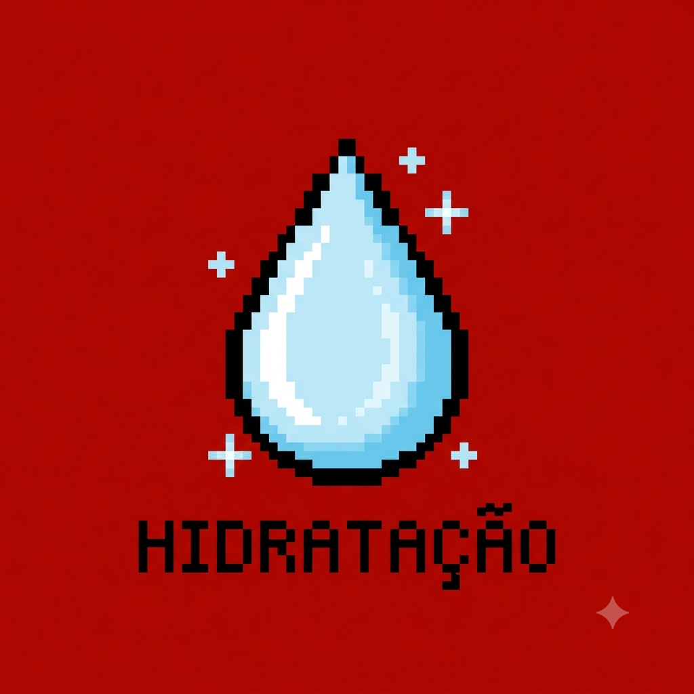
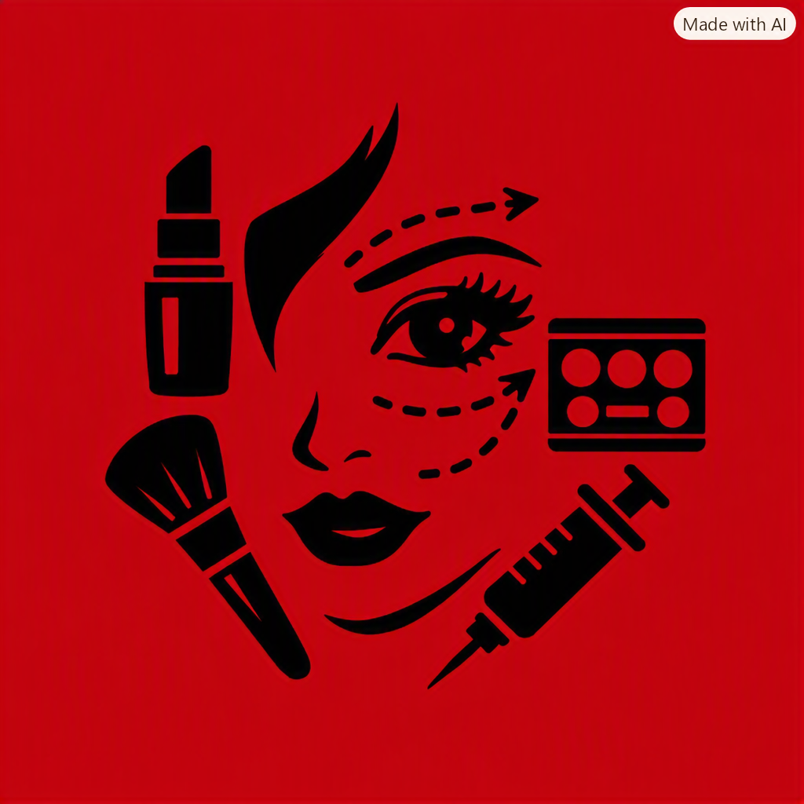
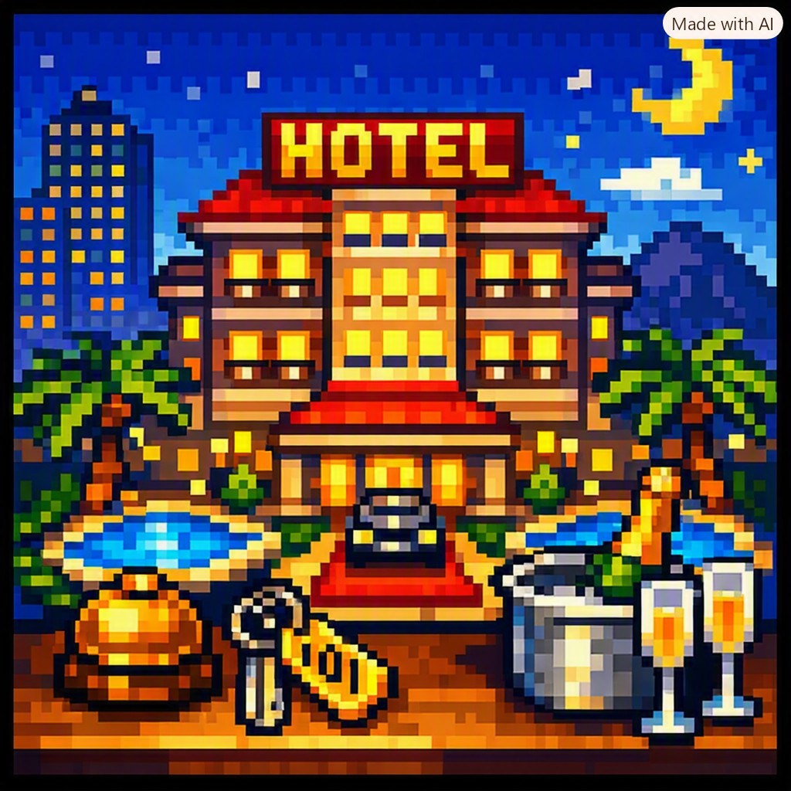
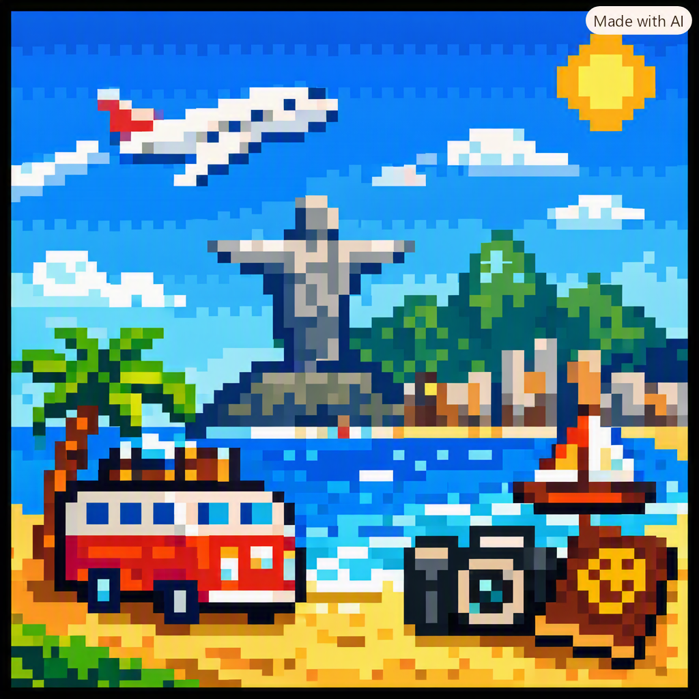

Meu primeiro post
Por: Brenda Caroline
Boas vindas ao meu novo blog! Aqui vou compartilhar dicas na area de maquiagem

Minha segunda Puplicação
Por Brenda Caroline
- Top 3 melhores maquiagens de custo acessivel
- 1º Bruna Tavares
- 2º Mari Maria
- 3º Franciny Ehlk

A influencia da maquiagem na autoestima
Por: Brenda
A maquiagem é muito mais do que uma técnica para realçar a beleza; ela é uma poderosa ferramenta de transformação pessoal e emocional. Ao longo da história, a maquiagem desempenhou um papel significativo em diversas culturas,
Fonte: turquesa bem-estar
- Preparar a pele: hidratar e usar primer.
- Realçar pontos: iluminador nos pontos altos do rosto.
- Finalização: spray fixador e contorno dos lábios com lápis antes do batom.

Tres melhores viagens no brasil
Por Brenda Caroline
- Top 3 melhores viagens do brasil
- 1º Fernando de Noronha
- 2º Lençóis Maranhenses
- 3º Foz do Iguaçu

Tres melhoreshoteis no brasil
Por Brenda Caroline
- Top 3 melhores hoteis no brasil
- 1º Copacabana Palace
- 2º Rosewood São Paulo
- 3º Hotel das Cataratas